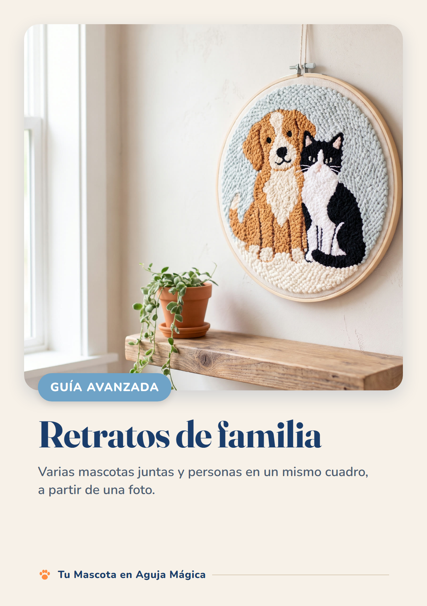
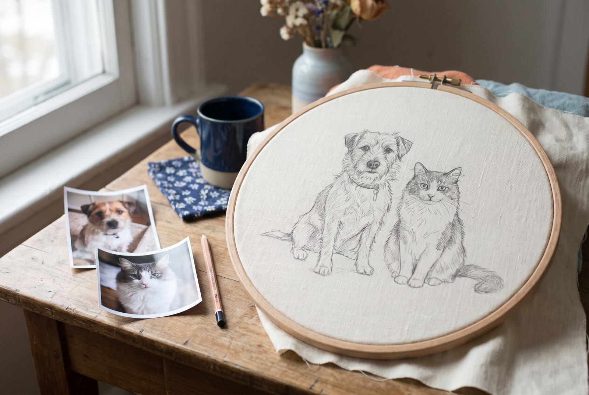
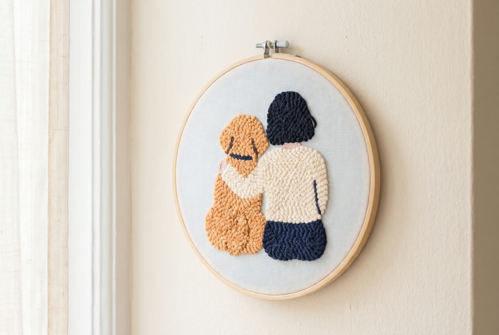
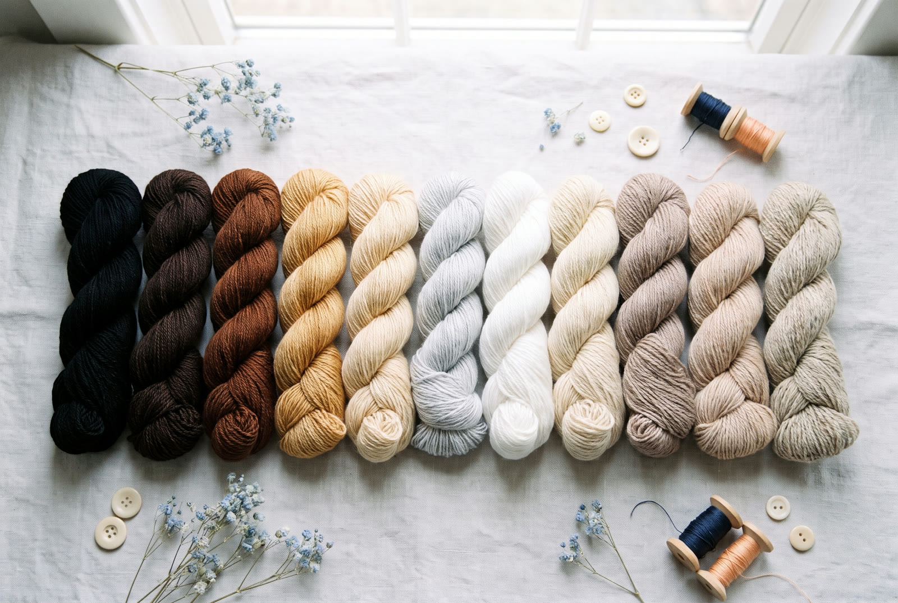

| 1 · La foto para un retrato de grupo | 3 |
| 2 · Armar la composición | 4 |
| 3 · Tamaño del bastidor y orden de trabajo | 5 |
| 4 · Retratos de personas: simplificar la cara | 6 |
| 5 · Colores de piel y de pelo | 7 |
| 6 · Errores comunes en retratos grandes | 8 |
Antes de empezar: hacé primero un retrato de una sola mascota con la guía principal. Esta guía da por sabida la técnica básica.
Lo ideal es una sola foto donde estén todos, con luz pareja y las caras a la misma altura. Casi nunca existe: por eso se puede armar con varias fotos.
Ojo con la escala: un gato al lado de un labrador no puede quedar del mismo tamaño. Respetá el tamaño real, o la imagen se ve rara aunque no se sepa por qué.
Cabezas juntas, levemente inclinadas una hacia la otra. Que se toquen o se superpongan un poco: separadas parecen dos cuadros en uno.
Armá un triángulo: el más grande atrás y al centro, los más chicos adelante y a los costados. Evitá ponerlos a todos en fila.
La persona abrazando o sosteniendo a la mascota, con las caras cerca. Si la foto es de cuerpo entero, recortala a la altura del pecho.
Regla simple: dejá un margen libre alrededor del grupo. El fondo liso es lo que hace que las caras se lean desde lejos.

| Integrantes | Bastidor sugerido |
|---|---|
| 2 | 250 a 300 mm |
| 3 | 300 mm o marco rectangular |
| 4 o más | marco rectangular o bastidor de tapicería |
En aguja mágica una cara no se "dibuja": se arma con zonas de color. Cuanto más simple, más se parece.
Estilo recomendado para empezar: cara sin rasgos, solo con el peinado y la ropa. Es el estilo que más se ve en retratos de familia bordados y es el que menos se equivoca.

Usá la misma altura de rulito para todos los pelajes y los pelos, y un rulito más bajo para la piel. Así el cuadro se ve parejo.

| Qué pasa | Cómo se arregla |
|---|---|
| La tela se afloja a mitad de camino | Volvé a tensarla cada vez que termines a un integrante. |
| Un integrante quedó más "lleno" que otro | Revisá la distancia entre puntos: tiene que ser la misma en todo el cuadro. |
| Las caras se pierden con el fondo | Hacé un contorno de una fila en un tono más oscuro alrededor del grupo. |
| La persona "no se parece" | Simplificá: sacá rasgos y agrandá lo que la identifica (peinado, anteojos). |
Para regalar o vender: los retratos de familia son los que más se piden por encargo. Calculá el precio con la fórmula del Bono 4, sumando el tiempo de cada integrante.